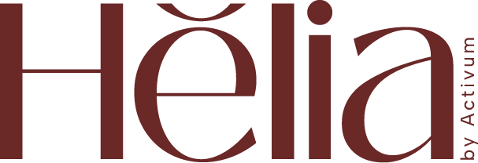
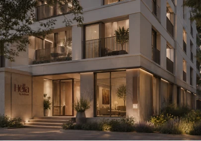

Base de identidad para Hëlia: logotipo, isotipo, paleta y tipografía.
Identity foundations for Hëlia: logo, icon, palette and typography.
- IdentidadIdentity
- LogotipoLogo
- IsotipoIcon
- PaletaPalette

- AñoYear
- 2026
- RolRole
- Logotipo y base de identidadLogo and identity foundations
- HerramientasTools
- Illustrator
El retoThe challenge
Hëlia necesitaba una base de marca cálida y elegante desde la que empezar a crecer: un nombre con carácter, fácil de reconocer en un rótulo y en pantalla.Hëlia needed a warm, elegant brand foundation to start growing from: a name with character, easy to recognise on a sign and on screen.
TipografíaTypography
Paleta de colorColour palette
#662222#F0E7CE#C9A96A#FBF8F0Qué hiceWhat I did
Wordmark serif con una diéresis propia, isotipo “Hë”, paleta granate y crema, y tipografía Black Mango, con versión clara y versión oscura para cualquier fondo.A serif wordmark with a distinctive umlaut, a “Hë” icon, a garnet-and-cream palette and the Black Mango typeface, with light and dark versions for any background.
ResultadoResult
Un logotipo e isotipo listos para usar, que ya se ven en el rótulo de la entrada del edificio.A ready-to-use logo and icon, already in place on the sign at the building’s entrance.
